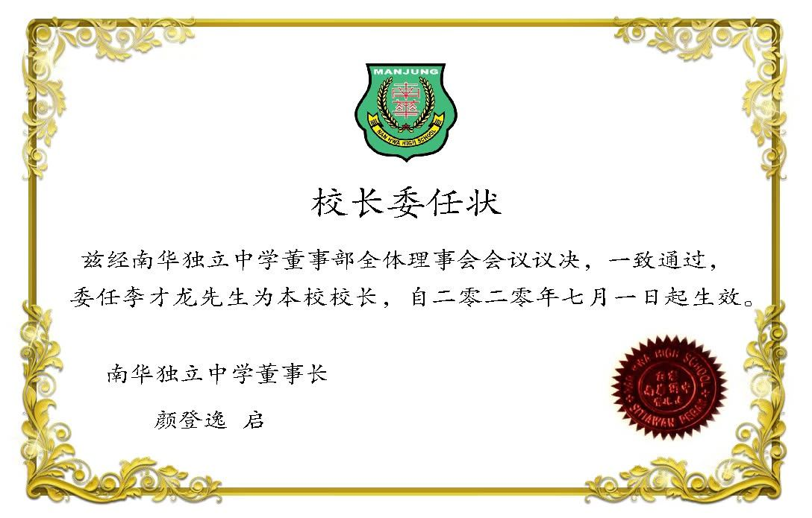

2/7/2020
2/7/2020
经南华独立中学董事部全体理事会会议议决，自 2020年 7月 1日起，正式委任李才龙老师为本校校长。
以下为本校董事部总务何添胜于 2020 年 7 月 1 日上午 10 时全校播放的语音通告：
各位主任、老师、职员和全体同学，大家早上好。我是董事总务何添胜，在此仅代表董事会向大家宣布本校代校长李才龙先生将从今日起正式升任为南华独中校长。我们的校长是去年 11 月被委任为代校长，经过八个月的观察，尤其在全球面临新冠肺炎的威胁下，李校长表现出应对能力和办学理念都达到董事会的要求，因此经董事会议一致通过上述委任。他将掌管学校及教学的行政工作，并同时管理学校食堂和宿舍的运作。希望全校师生和职员能与新校长互相配合，贯彻本校“学会读书，学会做人”的办学理念，相信南华可以再创高峰，大家都能以学校为荣。最后，祝大家身体健康，谢谢。
Good morning, everyone. I am General Affairs, Mr Ho Thiam Sing. I represent the BOG to announce that Mr Lee Choy Long as the Nan Hwa High School principal. It is effective from 1st of July 2020. He was the Acting Principal since November 2019. After 8 months of observation, we realise that his principles are aligned with the school’s objective and we are satisfied with his ability and performance. Thus, through the meeting last week, we have decided to appoint him as the school principal. He is in charge of the matter of admins, teaching, hostel and canteen operation etc. We hope that everyone can cooperate with the new principal to make sure everything goes smooth in the school and make the school more successful. May all of you stay healthy and stay safe. Thank you.
